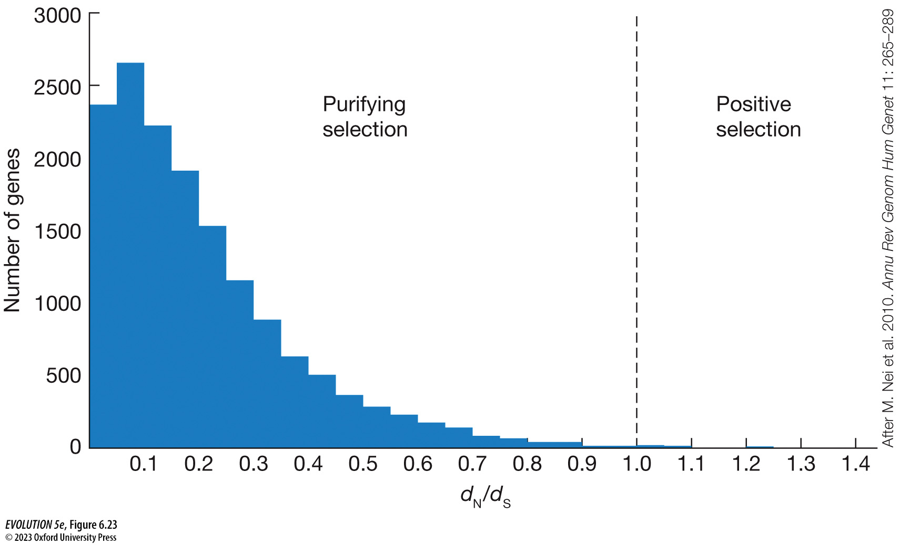
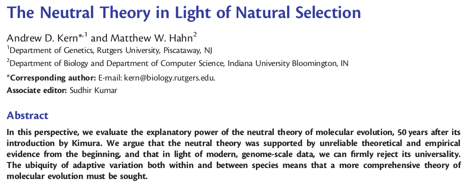
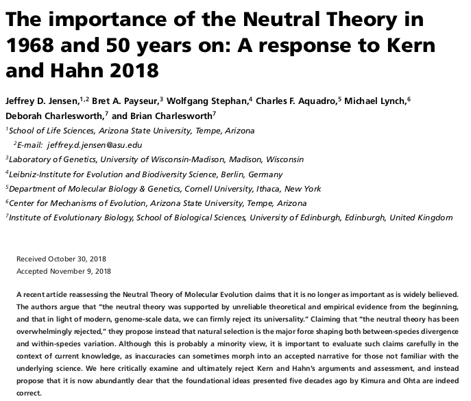

Genetic Drift and Genetic Variation
- Genetic drift is the random fluctuations in allele frequencies caused by sampling error (e.g., during meiosis, mating, survival) that affect the replication of a gene copy from one generation to the next.
- An idealized population is in Hardy-Weinberg equilibrium, where allele frequencies will not change from one generation to the next. By introducing a *finite population size*, genetic drift will occur, leading to changes in allele frequencies each generation.
- Drift is stronger in smaller populations. It erodes genetic variation, leading to fixation or loss within a population, and divergence between populations.
Genetic Variation within species
Polymorphisms are spread *un-evenly* across the genome, usually
higher in non-coding regions: between genes, in introns, or in third-codon positions.
Usually less than 5% of the genome is coding. Most of the genome
is likely neutral -- mutations in these regions do not affect
fitness.
By examining patterns of genetic variation across genomes we can test hypotheses
about the influence of genetic drift and selection on genome evolution.
Wright-Fisher Model
A model composed of 2N gene copies evolving by random mating with discrete non-overlapping generation times. The most basic WF model is an 'idealized population' with a finite population size. However, WF models can be extended by relaxing other assumptions of the idealized population, such as mutation and selection.
Genealogy of gene copies
Evolution of a population forward-in-time under a WF model. Each
generation a new set of 2N gene copies is formed, each has an
ancestor in the previous generation. But some gene copies
leave no descendants.
The probability that two gene copies share a common ancestor
in the previous generation is 1/2N. This is because each gene
copy has a probability of one of having *some* ancestor, but
if you sample two, the probability a second has the same as
the first is 1/2N.
**Exercise**
Divergence between gene copies
If the probability that two samples coalesce in a generation is 1/2N,
then the expected time until two samples coalesce is 2N. This follows
from modeling coalescent events according to a binomial distribution.
Thus, for a population of size N=10K the average divergence between
two gene copies is $2\times10K = 20K$ generations. For a smaller population,
where N=1K, the divergence between these copies is only $2\times1K=2K$.
We can use this information to estimate the number of mutations between
two gene copies. Given a mutation rate ($\mu$) in units of per-site per-generation,
such as 1e-8/site/gen, we multiply the amount of time the two gene copies
are diverged times the mutation rate. Finally, because mutation can occur
on either branch, we multiply by 2. This yields $\pi = 4 \times N_e \times \mu$
Expectation of genetic diversity
If most of the variation within genomes results from random genetic drift acting on genetic variation with no selective effect on fitness, then we can predict the expected genome-wide heterozygosity as: \[\begin{aligned} \pi = 4 * N_e * \mu \end{aligned} \] This measures the expected number of mutations that occur along the two branches of a genealogy separating two sampled gene copies. Population genetic diversity -- the expected difference between *any* two samples in the population, is exactly the same: \[\begin{aligned} \theta = 4 * N_e * \mu \end{aligned} \]
Variation across chromosomes
Polymorphisms also vary across chromosomes owing to variation in recombination. Regions with high recombination tend to be more polymorphic. This is because selection can act on individual sites more effectively, since recombination breaks their linkage to neighboring sites. This allows selection to fix one site while maintaining variation at nearby sites. By contrast, near centromeres, recombination is highly reduced, and selection on one site causes linked selection on very many neighboring sites.
Selection and Genetic Variation
When selection eliminates deleterious mutations (purifying selection) linked polymorphisms are removed as well. Similarly, when position selection sweeps a beneficial allele to fixation linked sites get swept to fixation also. In both cases, genetic variation decreased in the region surrounding the selected sites, leaving behind a "signature" of selection. This is "linked selection" or "hitchhiking".
Effective population size
A complex emergent property of a population that expresses the probability that a neutral gene copy will be inherited from one generation to the next.
- If the only relaxed model assumption is a finite population size, then N = Ne. Allele frequency change can be modeled by N.
- If other model assumptions are relaxed then Ne will results from multiple effects, and will deviate from N. Population size and effective population size are not equivalent in most models (and in real life).
- Ne can be estimated from genetic sequences (we will return to this in more detail next week.)
Genetic Drift and Natural Selection
Alleles can become randomly lost/fixed by drift regardless of their fitness effects when Ne is small. Even deleterious alleles can become fixed.
- When the selection coefficient, s, is much smaller than the strength of genetic drift (1/Ne), the allele will be effectively neutral.
- The fixation of many deleterious alleles can decrease the fitness of individuals or a population. This is termed inbreeding load. (diff from inb. depr.)
- Recombination breaks up the statistical association between alleles. This allows selection to act on one in isolation from another. (Hill-Robertson Interference). An explanation for the evolution of recombination.
Haldane's "cost of selection"
States that for selection to act on a single benefical allele at a locus long enough for it to become fixed requires a very long time (~300,000 generations). If this is the case, populations would accumulate many deleterious mutations during the time it takes to fix a single mutation. This would cause population absolute fitness to decrease greatly. How can populations possibly harbor the amount of genetic diversity that they do?
Neutral Theory of Molecular Evolution
Motoo Kimura proposed that MOST molecular evolution occurs by random genetic drift.

Neutral Theory of Molecular Evolution
Motoo Kimura proposed that MOST molecular evolution occurs by random genetic drift.
- Introduced in 1968, expanded into 1983 book "The Neutral Theory of Molecular Evolution".
- Most mutations are either neutral, or deleterious and rapidly removed by natural selection (and thus do not contribute significantly to variation within and between species at the molecular level).
- Beneficial mutations are rare, and when selection coeff is low, they behave "effectively neutral".
Neutral Theory of Molecular Evolution
With newly available data to estimate the amount of variation in protein sequences in a population, using gel electophoresis, it was found that there was much higher variation than expected if selection causes the rapid fixation of variation (agreeing with Haldane). Kimura proposed that most substitutions are neutral as an explanation.
Neutral Theory of Molecular Evolution
Kimura (1968) "Evolutionary Rate at the Molecular Level"
Estimated the rate of protein evolution from 3 loci and agreed
with Haldane's cost of selection, that rates of protein evolution are
**too rapid** to be compatible with natural selection driving substitutions.
"Calculating the rate of evolution in terms of nucleotide substitutions
seems to give a value so high that many of the mutations involved
must be neutral ones."
Neutral Theory of Molecular Evolution
Kimura and Ohta (1971) "Protein Polymorphism as a Phase of
Molecular Evolution". Predicted that rates of substitutions causing
divergence between species accumulate according to the neutral mutation
rate, and are thus relatively constant. Supported by protein sequence
data.
"Probably the strongest evidence for the theory is the remark-
able uniformity for each protein molecule in the rate of mutant
substitutions in the course of evolution."
"It is proposed that random genetic drift of neutral mutations in finite
populations can account for observed protein polymorphisms."
Neutral Theory of Molecular Evolution
Kimura (1977) "Preponderance of synonymous changes as evidence for the
neutral theory of molecular evolution". Showed that 3rd codon positions
which do not cause coding changes occur at the neutral rate, not faster,
as would be predicted if most genes experienced selection.
"ln my opinion, various observations suggest that as the
functional constraint diminishes the rate of evolution con-
verges to that of the synonymous substitutions. If this is valid,
such a convergence (or plateauing) of molecular evolutionary
rates will turn out to be strong supporting evidence for the
neutral theory"
Neutral Theory of Molecular Evolution
Kimura (1983) published the book "The Neutral Theory of Molecular Evolution" which combined all of these lines of evidence together in its most complete form. Proposed that the theory could alternatively be called the "mutation-random drift theory", since it does not enforce that all mutations are neutral. Deleterious mutations are removed, and nearly neutral mutations can fix by drift. It does not reject rare beneficial mutations, or the possibility for balancing selection to maintain polymorphisms, but states that these are very rare in comparison to neutral variation.
Neutral Theory and Evolutionary Modeling
The expectations of neutral theory underlie most of our mathematical models for studying population genetics. Notebook exercises 2-4 aim to connect the WF process, coalescent/gene trees, and genetic variation.
Detecting Selection
Several methods have been developed for detecting selection from patterns of genetic variation in genomes.
- Synonymous versus non-synonymous rates of evolution (dn/ds). Compare two species/pops: take the frequency of non-synonymous (cause codon change) sites that are different (dn); over the frequency of synonymous (no codon effect) sites that are different (ds).
- ds is a neutral expectation. dn can be faster by positive selection. Will be slower by purifying selection. Look for positive values.
- MkDonald Kreitman test examines variation within a species (requires more samples). Ratio of number of differences between two species (d) over the heterozygosity within one of the species (pi). Compares this ratio at syn versus non-syn sites.
- Genetic divergence between populations (Fst) in sliding windows along the genome (genome scan). Populations show elevated divergence at regions under selection.
Detecting Selection
Selective sweep
When strong selection causes the rapid fixation of a new allele it will cause a simultaneous fixation of many nearby alleles that are in linkage disequilibrium with the selected alleles. This creates a "dip" in diversity at a spatial location in the genome, with a rapid or gradual decay back to normal levels of diversity as you look farther away from the selected site. This pattern is temporal, and is strongest at the time when selection is occurring of has recently occurred. Genetic diversity will eventually accumulate in this region again and the pattern will disappear, leaving the substitutions that can be analyzed with MK-test, but no longer a spatial pattern.
Is most genome evolution neutral? (Debate)
 